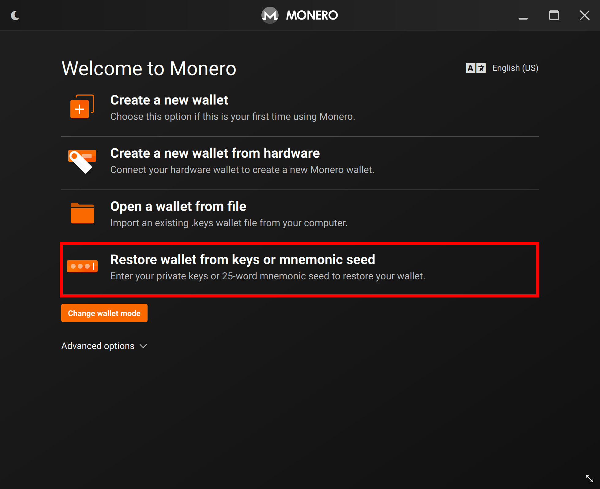
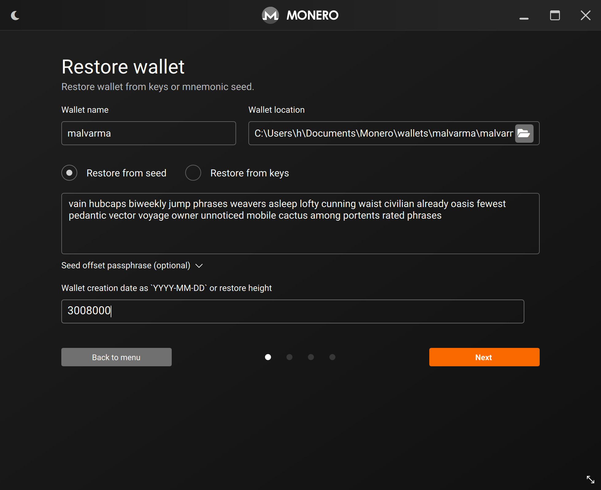
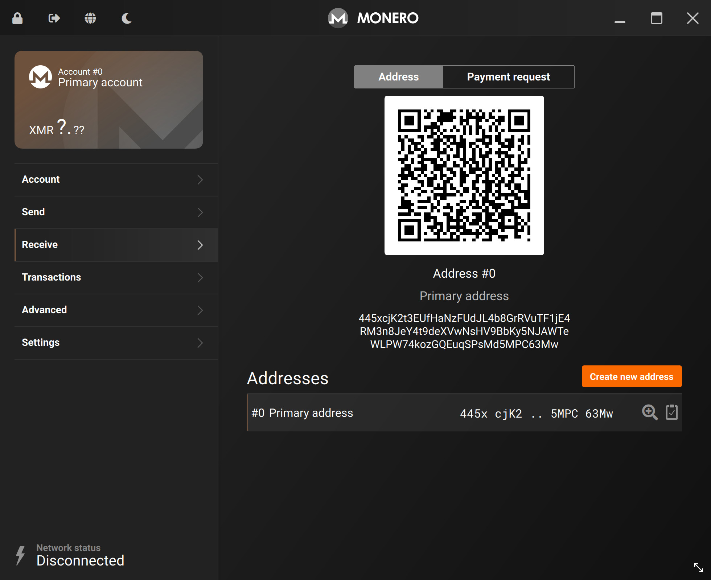

Restoring from the seed
In the case that you only have the cold wallet's seed phrase for recovery, you will have to:
- Recover the cold wallet
- Recreate the
view-onlywallet - Exchange outputs and key images
All the steps here are laid out in other chapters, we will be repeating them.
📎 Recovering the cold wallet
Be sure only recover your cold wallet on a properly air-gapped device.
On your air-gapped device, go through the standard procedure of creating a Monero wallet, this time selecting Restore wallet from keys or mnemonic seed.

Enter your seed phrase and re-create the cold wallet.
Password and node prompts will show.
Like in Create the cold wallet, it is up to you to choose a password or not.
For the node connection, select Connect to a remote node and do not add anything.

After creation, confirm that your wallet address is correct.

🖇 Recreating the view-only wallet
You can follow the exact same steps in Create the view wallet to re-create your view-only wallet.
After you have successfully recovered both the cold & view-only wallet, continue to the next step.
📤📥 Outputs and Key Images
We'll now be transferring two additional pieces of data to update both our cold and view-only wallet's balances.
Starting from your view-only wallet, follow the steps in Outputs, transferring the outputs file from your view-only wallet to your cold wallet.
On your cold wallet, import the outputs file.
Now, for the Key Images - follow the steps in Restoring the view wallet, transferring the Key Images file from your cold wallet to your view-only wallet.
Both wallets should now have up-to-date balances, you can now start creating and signing transactions again.